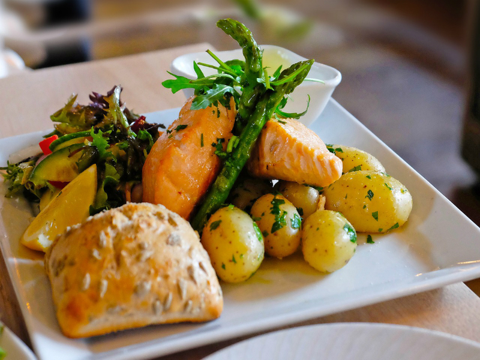

|
|
CARDAPIO |

Batata Norueguesa
A primeira coisa que você tem que experimentar é a comida dos noruegueses. Eles costumam cozinhá-las, para o jantar, acompanhando carne, frango ou salmão, algum molho industrializado e salada.
O bom são esses molhos super práticos e de vários sabores para dar uma diversificada, ou ficaria complicado.
Nas sextas-feiras, elas podem aparecer fritas, com carne de hambúrguer.
Sim, posso dizer que teve uma época em que não aguentava mais comer batata e fazia minha comida separada da minha família.
|

Bibimbap coreana
Se você também tem uma lista de comfort foods, inclua o Bibimbap!! Fica lindo no prato, facilmente ajustado para os paladares diferente, adicionando mais ou menos tempero.
A receita original usa seis vegetais, mas você pode usar o que tiver na geladeira.
É uma deliciosa mistura de arroz, vegetais, carne, ovo frito, pasta de pimenta (gochujang), molho de soja e sementes de gergelim.
|

Feijoada brasileira
A feijoada é um dos pratos típicos mais conhecidos e populares da culinária brasileira.
Composta basicamente por feijão preto, diversas partes do porco, linguiça, farinha e o acompanhamento de verduras e legumes.
|
A vida é como a cozinha: antes de escolher o que gosta, prove um pouco de tudo.
|
|
Rua Dona Herminia Ferreira Lima, 75 industrial - contagem,mg / TEL: 99999-8888
|